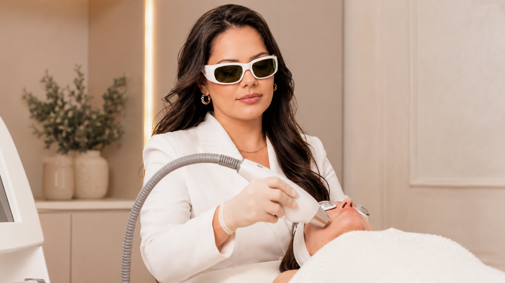

JOURNAL Laser e tecnologia
Laser e pele bronzeada: por que esperar pode ser uma escolha de segurança
Um bronzeado recente pode alterar a forma como a pele responde à luz. Se está considerando redução de pelos a laser, conte quando e como houve exposição solar; a decisão depende da pele atual, do aparelho e da avaliação profissional.

01 · Por que o bronzeamento recente importa
Por que o bronzeamento recente importa
A depilação a laser busca o pigmento do pelo, mas a pele também contém pigmento. Bronzeamento recente ou queimadura solar pode mudar a avaliação da pele e o equilíbrio entre o alvo e a superfície cutânea. Isso não permite decidir pela internet se uma sessão deve acontecer.
A American Academy of Dermatology orienta informar o dermatologista sobre bronzeamento recente e seguir instruções para evitar bronzeamento antes do tratamento. Essa orientação não define um número universal de dias nem substitui as instruções do aparelho e da profissional responsável.
02 · O que informar sobre sol e pele
O que informar sobre sol e pele
Conte a data aproximada da última exposição intensa, se houve queimadura, vermelhidão ou descamação, se usou autobronzeador e como a área está agora. Mencione também histórico de manchas após inflamação, reações a tratamentos anteriores e medicamentos ou produtos tópicos em uso.
Não tente esconder o bronzeado, raspar uma área irritada para “parecer pronta” nem iniciar clareadores ou outros produtos para antecipar a sessão. Essas ações podem mudar a pele e dificultar a avaliação.
03 · Por que não existe um prazo igual para todos
Por que não existe um prazo igual para todos
A decisão depende da aparência e condição atual da pele, da área a tratar, do equipamento e da orientação de segurança aplicável ao protocolo. Um prazo publicado para outro tipo de laser, outra região ou outra pessoa não confirma que a pele esteja pronta para o LightSheer Duet.
A profissional pode recomendar avaliar presencialmente, adiar ou seguir outro plano. Pergunte qual mudança precisa ocorrer antes de reconsiderar a sessão e como proteger a área enquanto isso; não marque uma data com base apenas em um intervalo encontrado online.
04 · Perguntas para levar à avaliação
Perguntas para levar à avaliação
Qual foi a última exposição solar que devo informar? A pele mostra bronzeamento ou irritação que altere a avaliação? Que orientação do LightSheer Duet se aplica à minha área e ao meu histórico? Se for melhor esperar, quando devo pedir uma nova avaliação?
O site não publica um prazo fixo para voltar após bronzeamento nem um protocolo individual. A resposta precisa considerar o aparelho, a pele observada e as orientações da profissional; nenhuma página pode confirmar remotamente que uma área esteja pronta.
Referências e limites
A AAD oferece orientação dermatológica geral para depilação a laser. Ela apoia a importância de informar bronzeamento e seguir instruções, mas não estabelece o protocolo desta clínica, o tempo de espera para cada pessoa ou uma decisão sobre a sessão.
- American Academy of Dermatology: preparo para depilação a laser
- American Academy of Dermatology: perguntas frequentes sobre depilação a laser
- Anvisa: procedimento estético seguro
Essas fontes não substituem a avaliação do aparelho, das instruções aplicáveis no Brasil ou da pele individual.

Contato
Pergunte sobre este tema ou outra preocupação
Envie sua dúvida com as informações que você se sente confortável em compartilhar. A resposta será enviada pelos dados informados.
Próximo passo